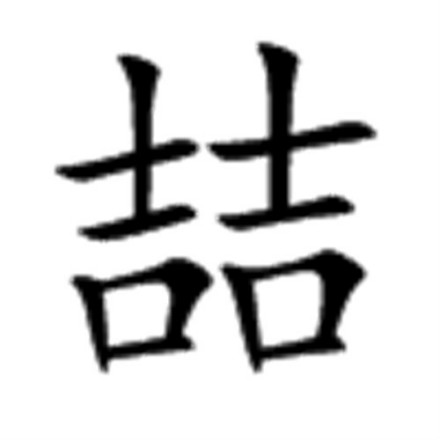
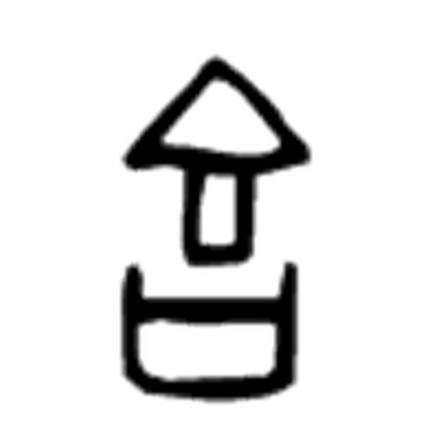

以武入哲
中国武术，上武得道，平天下；中武入喆，安身心；下武精技，防侵害。 中国文化，是中国软实力；中国武化，是中国实力。希腊哲学，主要是解决人和物的关系，更倾向于实物科研、弱化民族分别。印度哲学，主要是解释人和神的关系，虽然在哲学层面上是最深刻的，但面对现实问题却很无力，致使得印度在几千年的历史中被一个又一个外敌反复占有，而丧失了自己的承传。中国哲学，主要是解决人和人的关系的：人与人之间关系的紧密建立，使得在这片区域的人们形成极强的认同感与对外的同一感；高度发达的文明建设、形成了对周边部族的文明优势；巨大的文明落差，始得保持了自己民族文化和民族精神的纯净性，不被外族所侵蚀、破坏，并教化、归（贵）正、同化了外族。 而世界上其它的文明古国，如埃及、巴比伦，都淹没在沙漠中了，现在的埃及人跟古埃及人不是一回事儿了，现在的伊拉克人也不是古巴比伦文明的继承人：希腊文明被无情入侵的罗马的拙劣仿制所淹没，却幸而在日耳曼诸部族的政治文化生活中得到了发扬：古印度的文化被雅利安人扫灭，辉煌的玛雅文化也被西班牙人付之一炬。唯一没有中断地记载、并传承下来的古文明，就是中国的文明。 中国文明史，是以中国文化成就的。中国文化以文、武形式相融汇而成。中国武术，是成就中国文化不可分割的主体基因： 一． 中国文明，是以“道”引领，为人生最高追求目标、而以此建立人与人之间的紧密关系的。道，辵首也，头行走也，是务虚所为。 二． 而“道丧而后德、德丧而后仁、仁丧而后义、义丧而后礼。夫礼，忠信之薄，而乱之首也。”现实社会中亟需务实所为，来解决“乱之首”。这便出现了武。 三． 此“德、仁、义、礼”皆是以中国武术的“喆（音zhe，古同哲）”所全然归纳把握、以此为修习目标的。喆，双吉：吉，是“将兵器安放在兵器架上”，高度防卫、免受危难的意思；双吉，是“旗鼓相当、实力相衡”的意思。 喆，代表了中华文明的哲学，不仅以现代哲学的“两相对立、相互验证而相衡”作为人的终极追求，而是以此“止戈为武”的精准明示，解决“夫礼，忠信之薄，而乱之首”的问题、建立起人与人之间紧密、和谐的关系后，能够轻松孜力追求“道”的境界，以完成“土生人、人成仁以王、王成全为主”的高级进化过程。这是中华文明延衍至今、傲然屹立的实力保障。 中国文化，是中国软实力；中国武化，是中国实力，是贯通公权（政府）、私权（市场）和共权（社会），以平衡整体文明发展的高等敎化方式。我们身为中国人，携华夏高等文明基因，将会在修习咏春拳及武道、法、理中，融汇渗透，圆融通达、自立自强；崛起于国际，佼佼于凡尘。由此，圣人以始得安然入道、精英以始得平衡相融合、凡夫以始得不受侵害，成就中华文明史，至今。
 